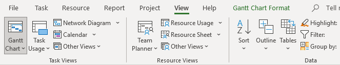
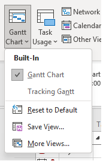
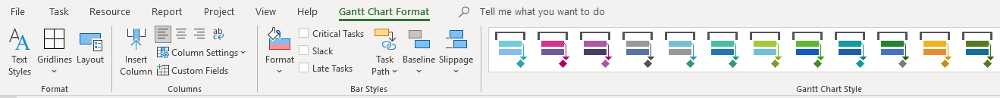
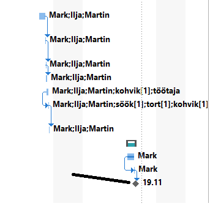
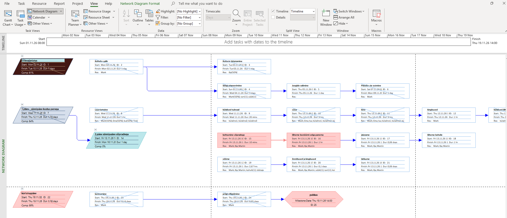
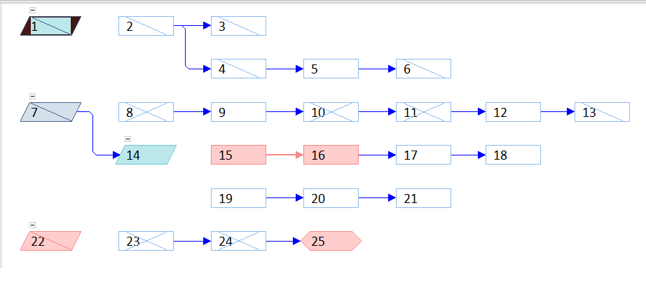
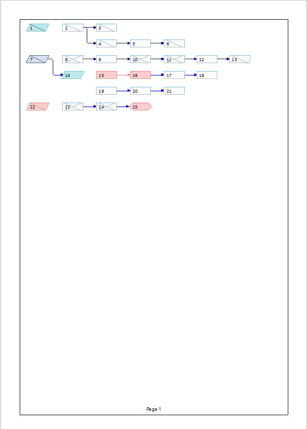

1. Ava View menüü
Projekti avamisel klõpsa ülaribalt „View" (Vaade). Siin on kõik saadaval olevad vaated ja diagrammitüübid, sh Gantt Chart, Network Diagram ja Resource Graph.

2. Vali Gantt Chart
Klõpsa „Gantt Chart" – see on kõige levinum projektijuhtimise diagramm, kus ülesanded kuvatakse ajajoonel horisontaalsete ribadena.

3. Kohanda Gantt ribasid
Paremklõpsa Gantti ribal → „Format Bar" (Vorminda riba). Saad muuta riba värvi, kuju ja teksti, mis kuvab riba peal või kõrval.

4. Lisa verstapostid (Milestones)
Verstapost on nullkestusega ülesanne – see kuvatakse Ganttis teemandi kujul. Loo ülesanne, määra kestuseks „0 days" ja see muutub automaatselt verstapostiks.

5. Ava Network Diagram
View → „Network Diagram". See kuvab ülesanded kastidena ja nende vahelised sõltuvused nooltena – sobib kriitilise tee analüüsiks.

6. Kuva kriitiline tee
Gantt Chart vaates: „Format" → lülita sisse „Critical Tasks". Kriitilised ülesanded (mis mõjutavad projekti lõppkuupäeva) värvitakse punaseks.

7. Prindi diagramm
File → Print → „Page Setup". Siin saad seadistada lehe orientatsiooni, mõõtkava ja millised veerud trükitakse koos Gantiga.
